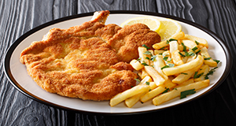

Milanesa
A Milanesa foi introduzida na América Latina pela mão de imigrantes italianos durante 1860 e 1920. Essa imigração foi ainda mais forte na Argentina, onde existe uma verdadeira tradição para esse prato de origem italiana. Seu nome deriva de uma receita de Milão, cotoletta alla milanese (vitela Milanesa).

Ingredientes:
700 g de bifes de alcatra
3 ovos
1 pacote de farinha de rosca
1 pacote de queijo ralado
1/2 xícara (chá) de salsinha picada
sal a gosto
óleo ou banha pra fritar
MODO DE PREPARO:
Bata os ovos com um garfo e misture a salsinha picada, reserve.
Misture a farinha de rosca com o queijo ralado, reserve.
Salgue os bifes.
Passe primeiro pelo ovo batido com a salsinha picada.
Logo, passe pela farinha de rosca misturada com o queijo.
Leve pra fritar no óleo bem quente até ficar dourado e crocante